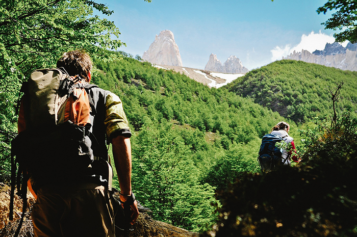

Dificultad Media
Trekking Mirador del León
Sendero guiado de 5 km entre bosques nativos que culmina en un mirador con avistamiento garantizado de grandes vistas.
- ⏱️ Duración: 4 horas
- 📍 Punto de partida: Refugio Base